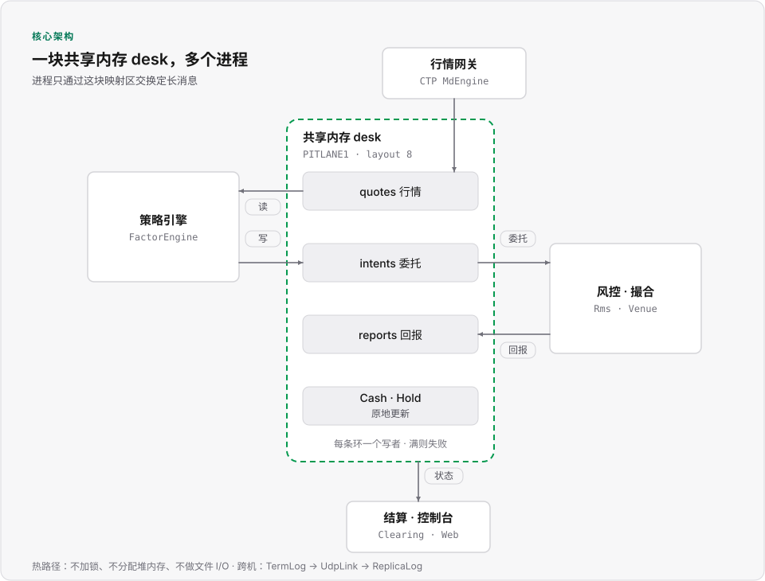

架构

一块文件映射（PITLANE1，kDeskVersion 8）承载所有环以及资金、持仓行。只有魔数与布局都匹配时，desk_view 才会挂接；挂接后每条环只有一个写入者，每个读者各有一个读取位置。环满时写入失败、环内容不变：既不扩容，也不覆盖未确认的槽位。下文依次介绍映射文件、发布与读取消息、运行会话循环，以及如何把委托送入纸面撮合。

一块文件映射（PITLANE1，kDeskVersion 8）承载所有环以及资金、持仓行。只有魔数与布局都匹配时，desk_view 才会挂接；挂接后每条环只有一个写入者，每个读者各有一个读取位置。环满时写入失败、环内容不变：既不扩容，也不覆盖未确认的槽位。下文依次介绍映射文件、发布与读取消息、运行会话循环，以及如何把委托送入纸面撮合。